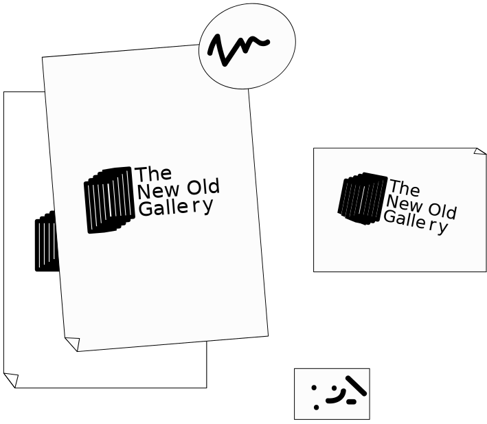
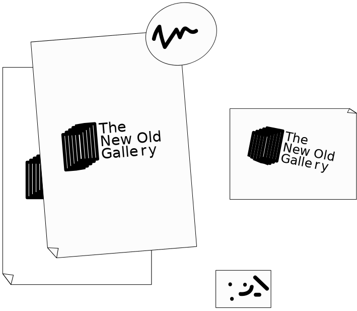

1

2
3

4

1. Usa tu móvil, like always
2. Busca y encuentra no-expos en la calle
3. Maagic, fotografía y captura solo con un click desde la app
4. Accede a nuestra galería virtual y toda la info que necesitas
1
2
3
4